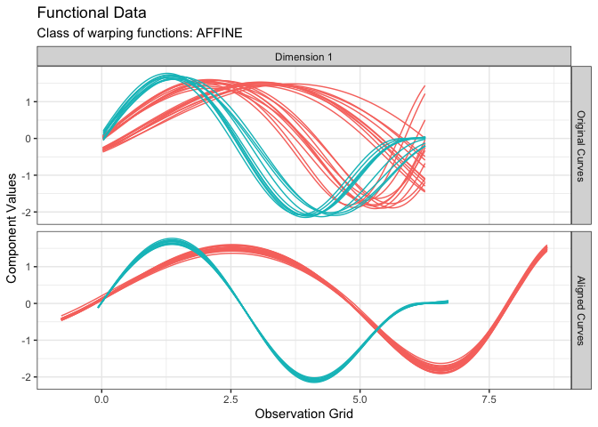
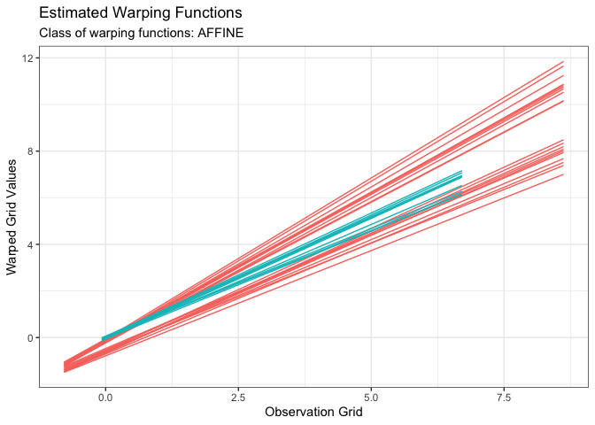

The fdacluster package provides the kma() function that jointly performs clustering and alignment of a functional data set.
Getting Started
Prerequisites
The package is linked against OpenMP and the BLAS and LAPACK libraries. Hence, you will need to set up an appropriate development environment for the package to install properly. Specifically:
- on Linux: it should be ready;
- on Windows: you should install Rtools;
- on macOS: you should refer to https://mac.r-project.org/tools/ and install the relevant tools.
Installation
You can install the latest stable version of fdacluster from CRAN with:
install.packages("fdacluster")Or you can install the development version from GitHub with:
# install.packages("remotes")
remotes::install_github("astamm/fdacluster")Example
library(fdacluster)
res <- kma(
simulated30$x,
simulated30$y,
seeds = c(1, 21),
n_clust = 2,
center_method = "medoid",
warping_method = "affine",
dissimilarity_method = "pearson"
)
#> Information about the data set:
#> - Number of observations: 30
#> - Number of dimensions: 1
#> - Number of points: 200
#>
#> Information about cluster initialization:
#> - Number of clusters: 2
#> - Initial seeds for cluster centers: 1 21
#>
#> Information about the methods used within the algorithm:
#> - Warping method: affine
#> - Center method: medoid
#> - Dissimilarity method: pearson
#> - Optimization method: bobyqa
#>
#> Information about warping parameter bounds:
#> - Warping options: 0.1500 0.1500
#>
#> Information about convergence criteria:
#> - Maximum number of iterations: 100
#> - Distance relative tolerance: 0.001
#>
#> Information about parallelization setup:
#> - Number of threads: 1
#> - Parallel method: 0
#>
#> Other information:
#> - Use fence to robustify: 0
#> - Check total dissimilarity: 1
#> - Compute overall center: 0
#>
#> Running k-centroid algorithm:
#> - Iteration #1
#> * Size of cluster #0: 20
#> * Size of cluster #1: 10
#> - Iteration #2
#> * Size of cluster #0: 20
#> * Size of cluster #1: 10
#>
#> Active stopping criteria:
#> - Memberships did not change.
plot(res, type = "data")
plot(res, type = "warping")